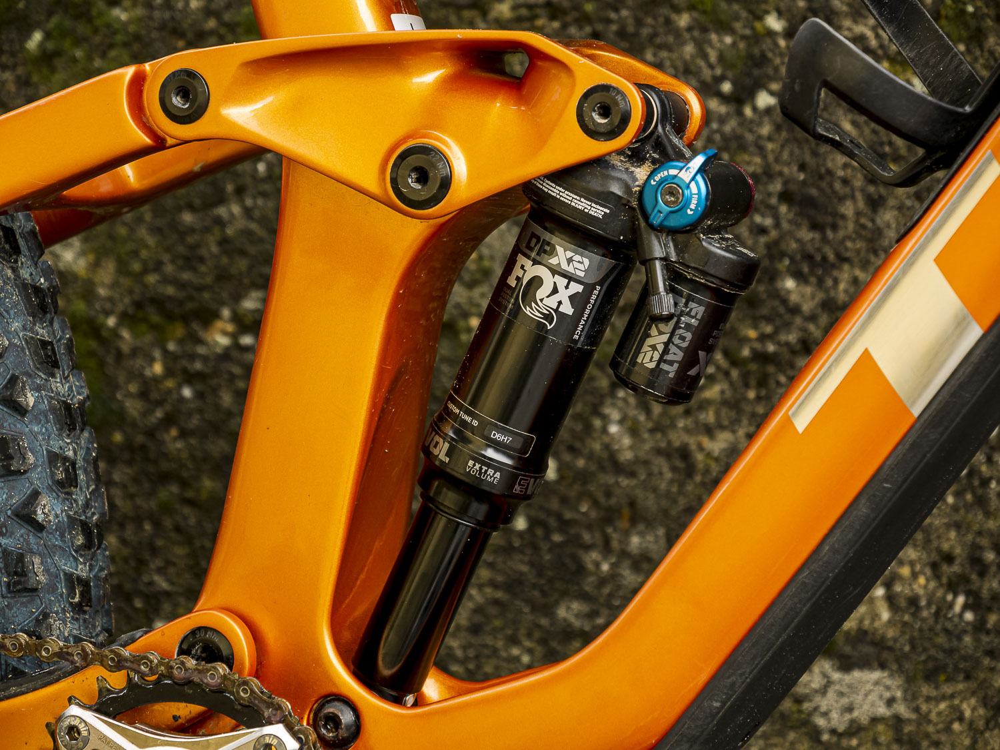

Manutenzione Ammortizzatore MTB
L'ammortizzatore posteriore è essenziale per assorbire urti e migliorare la trazione. Ecco cosa controllare regolarmente per mantenerlo efficiente:
- Pressione dell’aria: regola secondo il peso e lo stile di guida (sag consigliato 25–30%).
- Controllo perdite: verifica che non ci siano perdite d’olio o residui intorno agli steli.
- Pulizia esterna: usa un panno pulito dopo ogni uscita per rimuovere sporco e fango.
- Service periodico: ogni 50–100 ore, segui le indicazioni del produttore per il service completo.

Controlla anche le regolazioni HSC, LSC, rebound e blocco in base al tuo utilizzo e terreno.
← Torna alla pagina Manutenzione